Tsaritsino
Tsaritsino is a representation of the method of interpreting and synthesizing two cultures — Russian and Western. Tsaritsino was designed as a vast experimental space and continues to be such for the contemporary user. Made in collaboration with Designworkout. Developed a visual system for various types of communication, created layouts, documented guidelines, designed merchandise, supported the implementation of the style through real-world projects, and oversaw art direction and rollout.
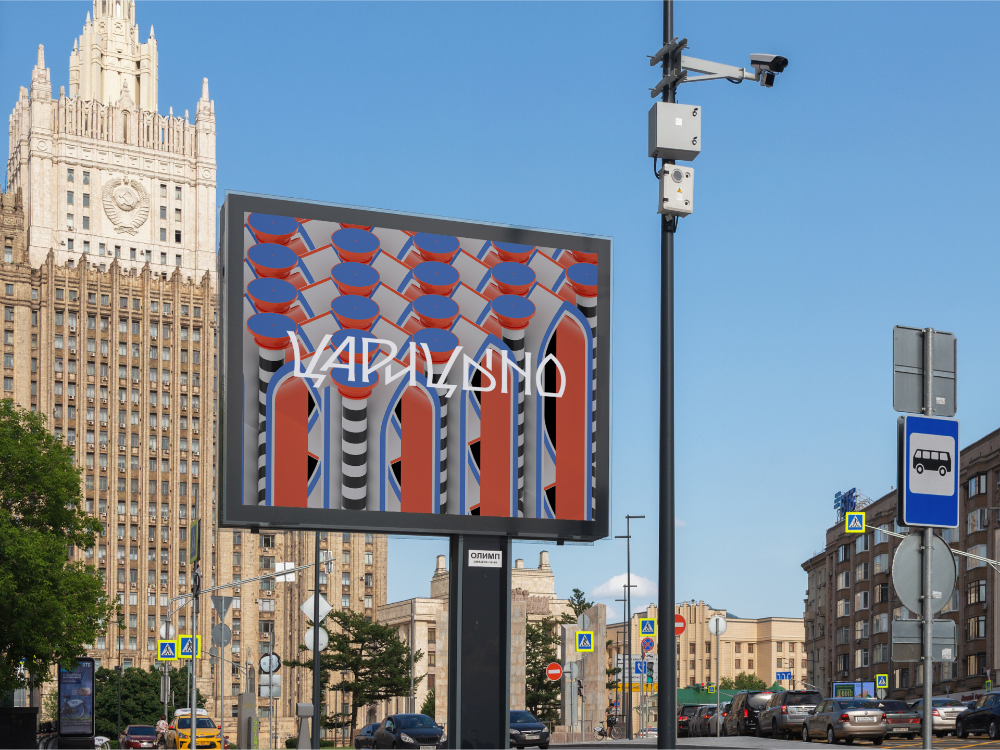
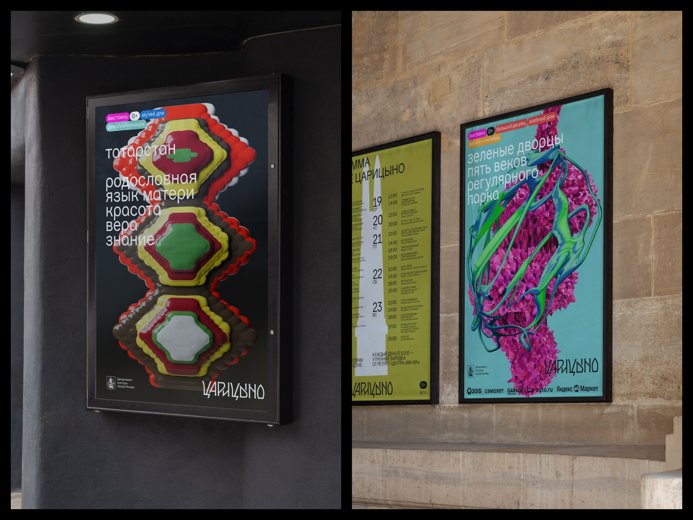
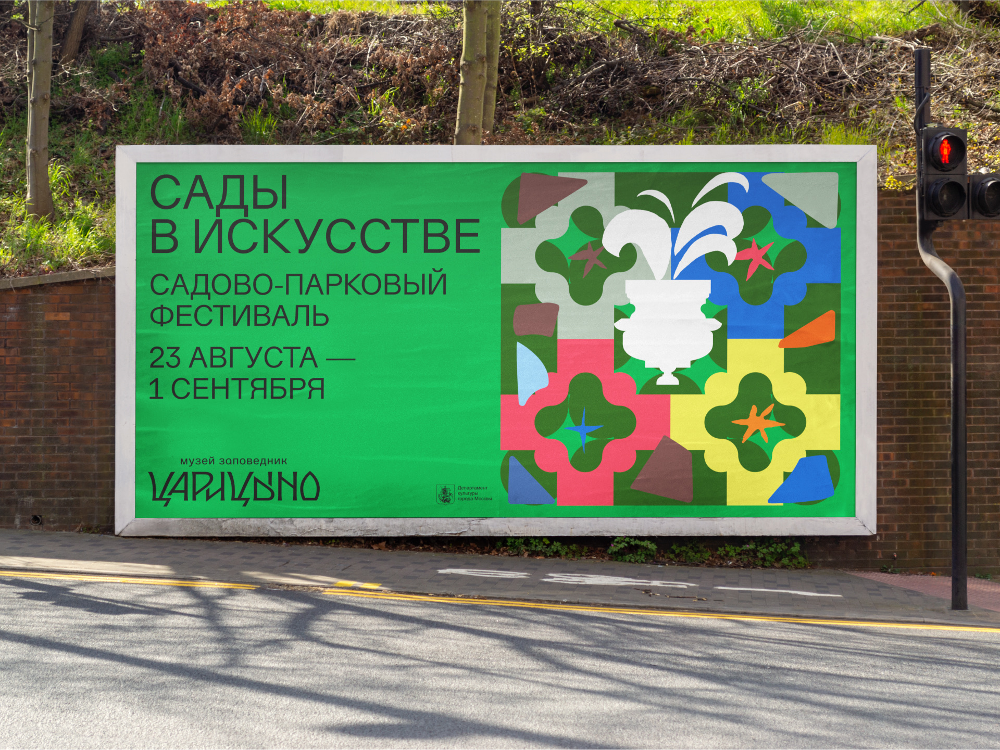
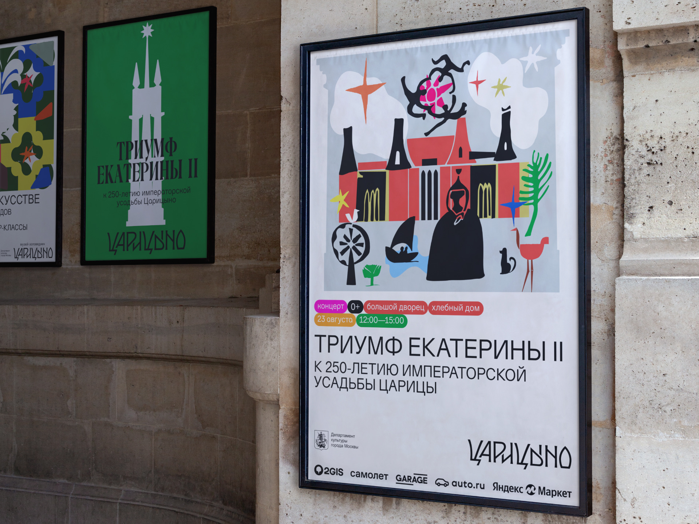
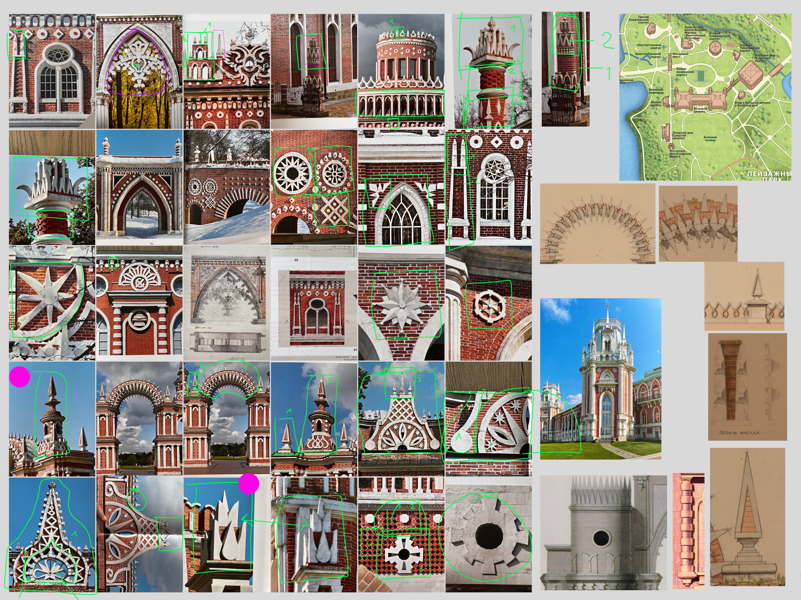
Tsaritsino is a "world within a world" (all the components of the 'larger world' — people, animals, plants, water, light, and buildings — are contained within a relatively small space), which allows it to be viewed as a model for many sociocultural processes. Tsaritsino embodies humanism, interconnectedness, and relationships, the ability to create something new by combining dissimilar elements, and the celebration of existence through an understanding of the beauty of creation.
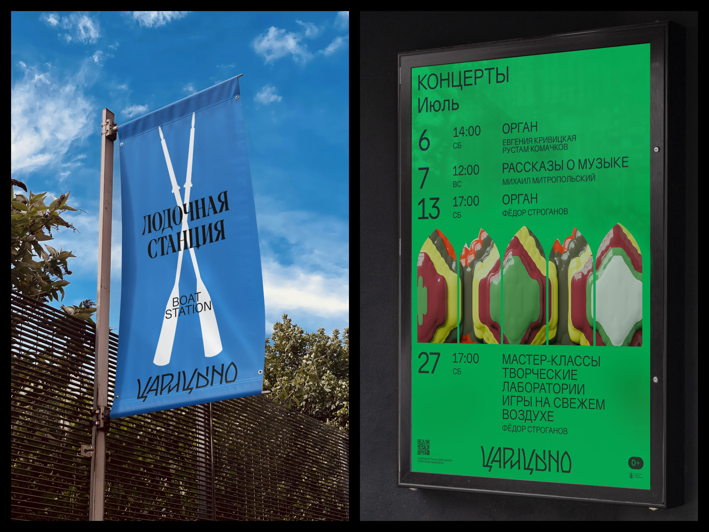
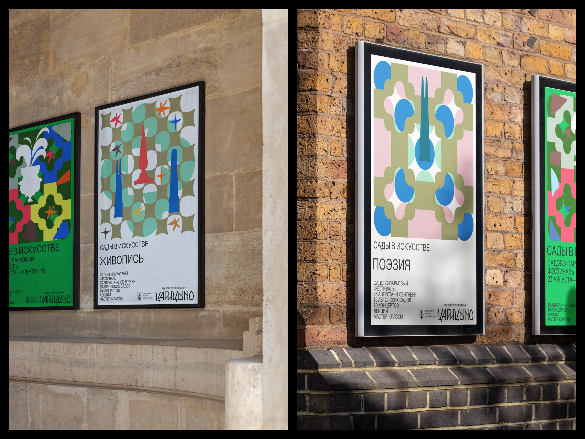
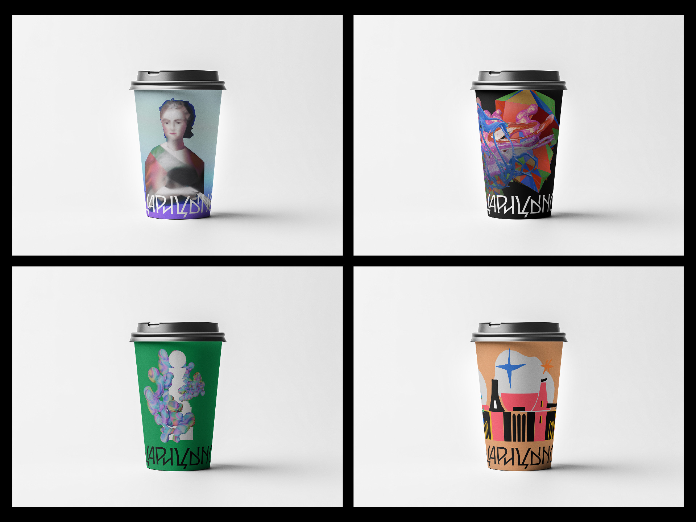
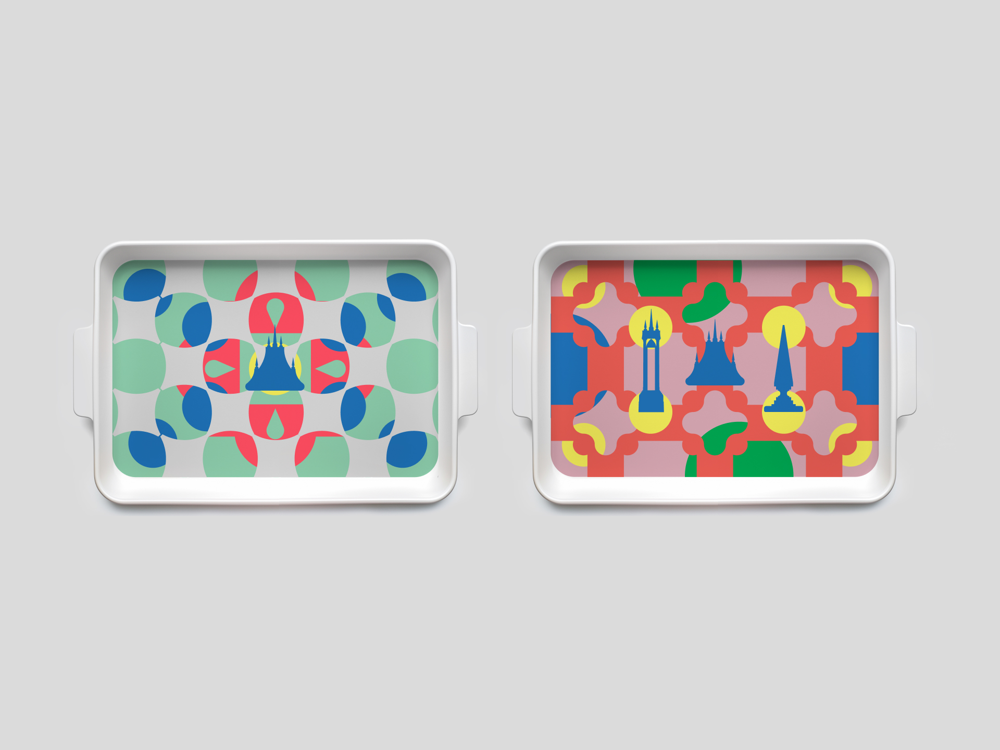
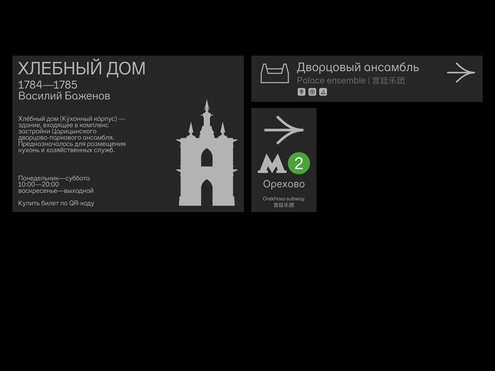
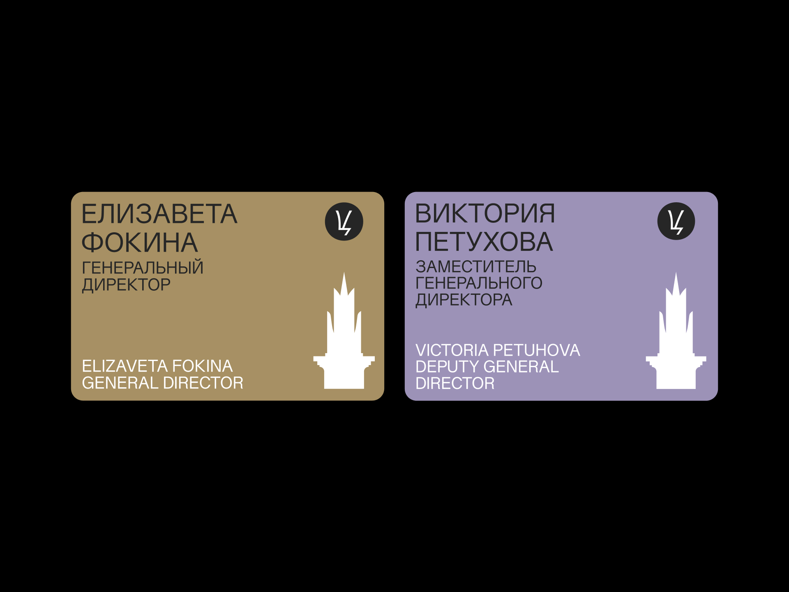
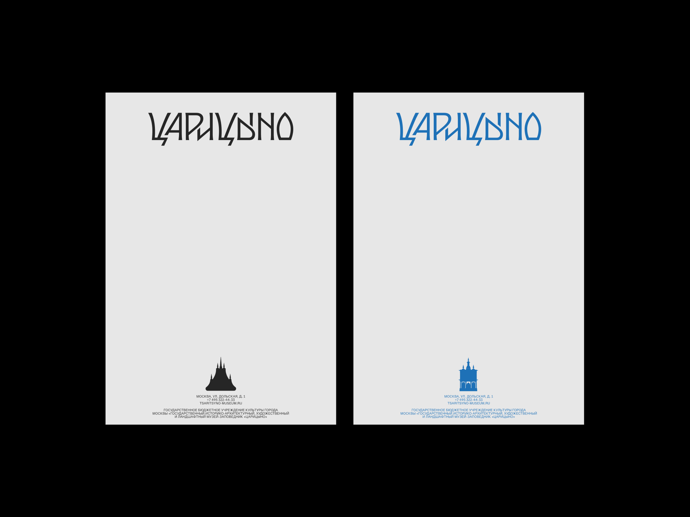
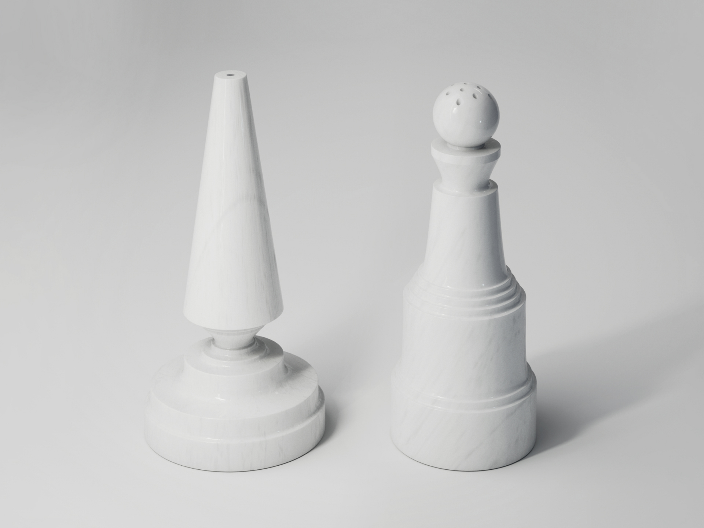
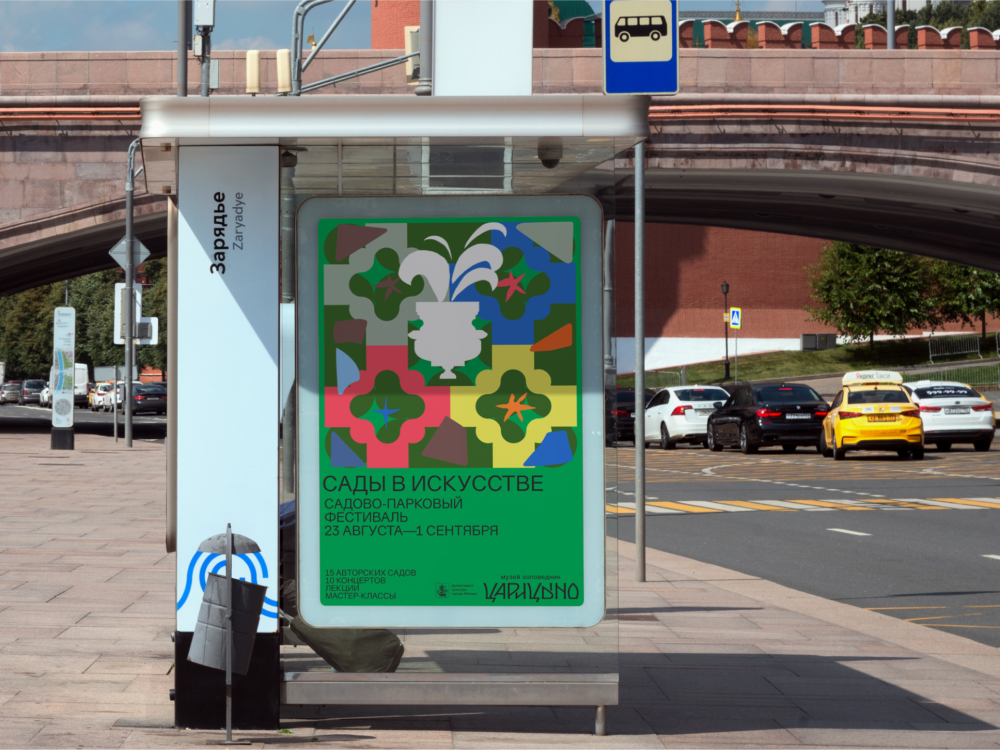
/ Note · Some of the workflows or interfaces for this project can be under NDA.